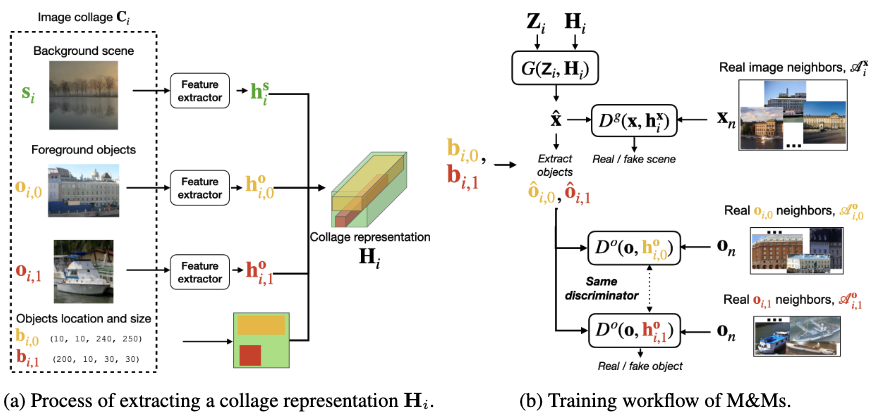

|
Marlene Careil
I am a final-year PhD student at FAIR Paris and Telecom Paris (LTCI team).
I am advised by Jakob Verbeek and Stephane Lathuiliere.
My research focuses on improving controllability and diversity of deep generative models (GANs and diffusion models), as well as few-shot image generation. I also explore perceptual compression which leverages generative models to improve realism of reconstructed images.
I received a MSc/BSc in Applied Mathematics & Computer Science from CentraleSupélec (diplôme
d'Ingénieur) and a MSc in Mathematical Sciences from Oxford University.
Email /
CV /
Google Scholar
/
LinkedIn
|
|
|
|
Towards image compression with perfect realism at ultra-low bitrates
Marlene Careil, Matthew J Muckley, Jakob Verbeek, Stéphane Lathuilière
Under Review, 2023
paper / bibtex
|
|
|
Zero-shot spatial layout conditioning for text-to-image diffusion models
Guillaume Couairon*, Marlene Careil*, Matthieu Cord, Stephane Lathuilière, Jakob Verbeek
ICCV, 2023
paper / bibtex
|
|
|
Few-shot Semantic Image Synthesis with Class Affinity Transfer
Marlene Careil, Jakob Verbeek, Stephane Lathuilière
CVPR, 2023
paper / bibtex
|
|
|
Unifying conditional and unconditional semantic image synthesis with OCO-GAN
Marlene Careil, Stephane Lathuiliere, Camille Couprie, Jakob Verbeek
ECCV Workshop on Advances in Image Manipulation, 2022
paper / bibtex
|
|

|
Controllable Image Generation via Collage Representations
Arantxa Casanova, Marlene Careil, Adriana Romero-Soriano, Christopher J Pal, Jakob Verbeek, Michal Drozdzal
Arxiv, 2023
paper / bibtex
|
|
|
Instance-conditioned gan
Arantxa Casanova, Marlene Careil, Jakob Verbeek, Michal Drozdzal, Adriana Romero Soriano
NeurIPS, 2021 (spotlight)
paper / bibtex
|
|
{kind=link}